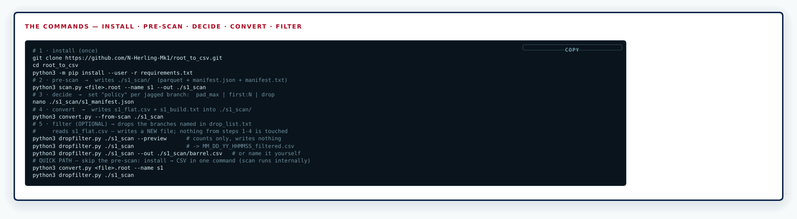
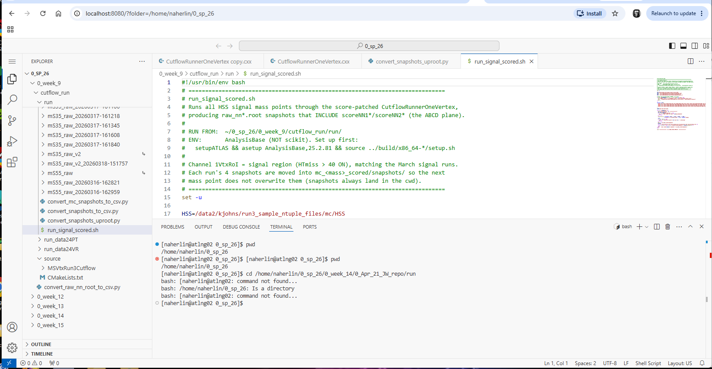
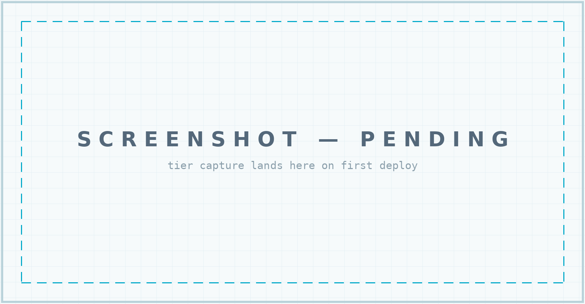

ROOT → CSV | SCAN · CLASSIFY · UNFOLD
ATLAS ntuples carry jagged structures a flat CSV can't hold as-is. This toolkit scans, classifies, and unfolds them.
THE THREE TIERS
Three ways to run the toolkit — pick the tier that matches your setup. Each tier page carries its complete, self-contained instructions, including the clean-up warnings where tunnels are involved.
TIER 1 — COMMAND LINE
Run through the command line on a headless server
(e.g. @atlng02.physics.arizona.edu). Pure ssh + python: clone, pip install, run
scan.py / convert.py. No display, no ports, no
tunnels — outputs are files you scp down.

TIER 2 — VS CODE VIA TUNNELING
Run through Visual Studio Code in a browser — code-server on the headless node, reached through an ssh tunnel. GUI editing, one-click file downloads, integrated terminal (every Tier 1 command works inside it).

TIER 3 — FULL STACK (TIER 2 + FLASK)
Tier 2 plus the repo's Flask server — unlocking full-stack capabilities: live report views served from the node, re-runs from the browser. The Flask layer is the stage-D unlock; commands are staged on the tier page.
